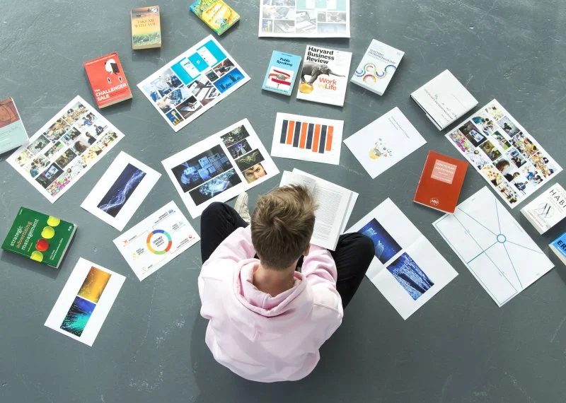
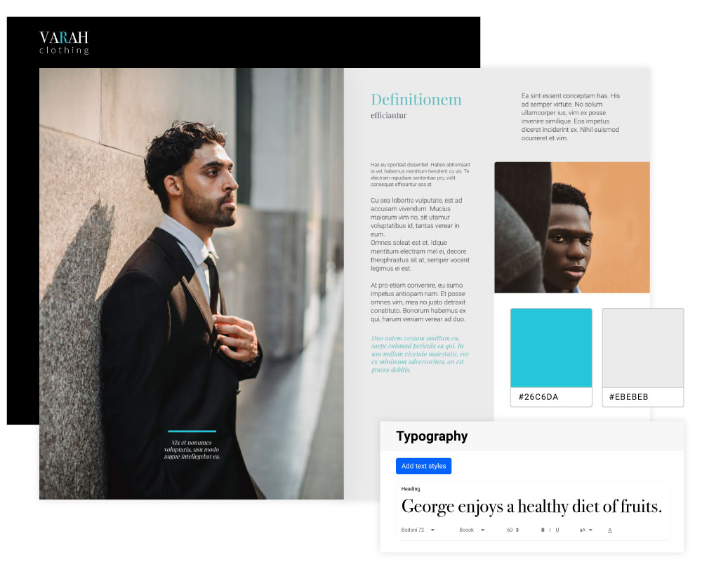
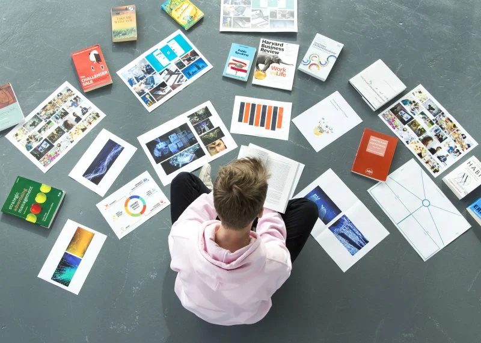
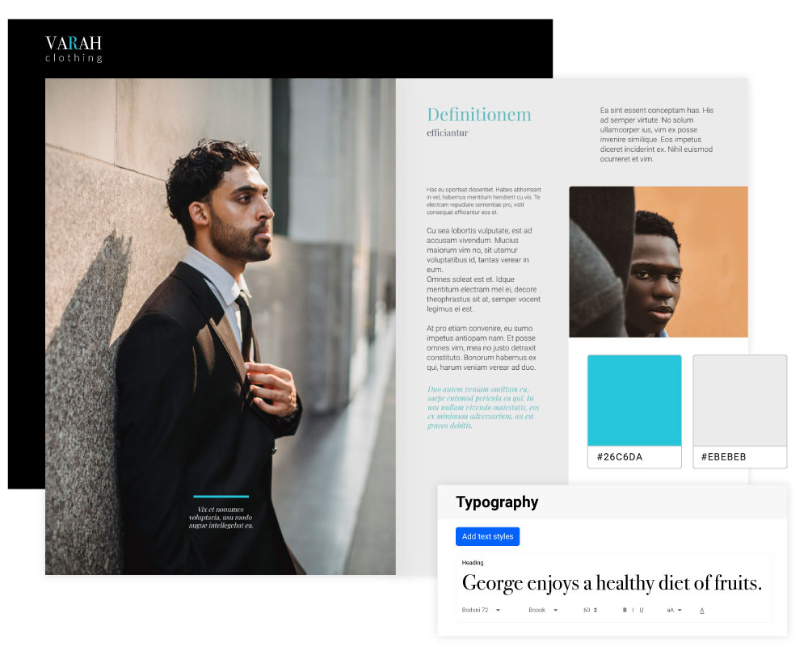
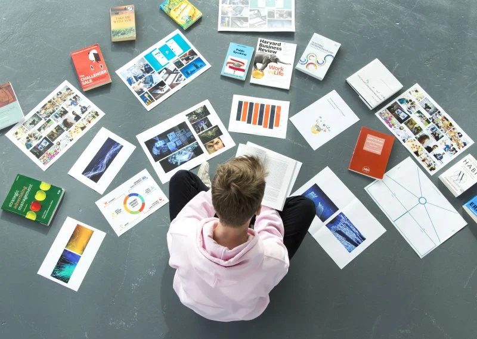
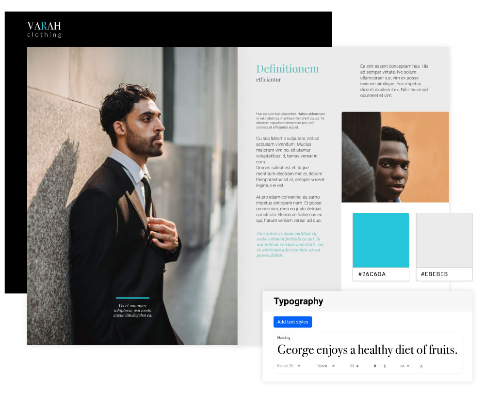

PORTFOLIO
 





I am talented and highly dedicated software engineer who specializes in both front-end and back-end development, as well as graphic design. With a strong foundation in various programming languages, tools, and frameworks, i adept at creating visually appealing, fully functional, and user-friendly applications and websites. In today's rapidly evolving digital world, i not only understand the importance of staying up-to-date with the latest technological advancements and industry trends but also actively invests time and energy into continuous self-improvement and skill enhancement. As a result, I am always ready to meet and exceed the demands and expectations of any project, be it a start-up initiative or an established enterprise. In addition to their outstanding technical capabilities, i also brings to the table exceptional creativity and an impressive artistic sense. By integrating my graphic design experiance, i am able to craft visually stunning and engaging digital solutions that not only perform seamlessly but also capture and maintain a user's attention, ultimately driving client satisfaction and user retention. These skills, combined with their excellent communication abilities, strong work ethic, and team-player mentality, i am a truly invaluable asset to any organization looking to hire a well-rounded, determined, and reliable software engineering professional.


As a highly skilled and proficient web developer, I have consistently demonstrated exceptional abilities in creating visually appealing, user-friendly, and responsive websites using the latest cutting-edge technologies. I bring a unique combination of creativity, technical expertise, and keen attention to detail which has allowed me to successfully contribute to a diverse range of projects.

As a highly skilled graphic designer, I possess a keen eye for detail and an innate ability to harness the power of design in creating visually appealing and impactful designs. My extensive experience in the industry allows me to cater to a diverse range of clientele and effectively translate their ideas into captivating designs.
As a highly skilled digital marketing professional with a proven track record of success, I have consistently demonstrated my ability to drive significant improvements in brand awareness, customer engagement, and revenue growth.